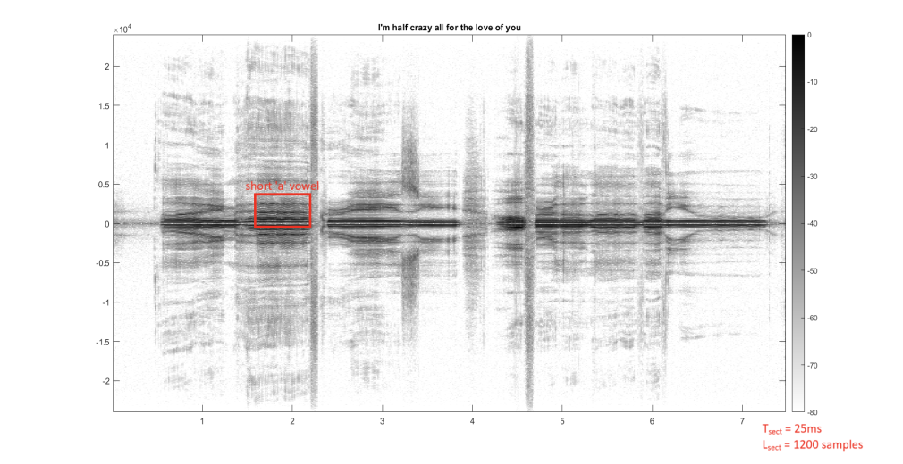
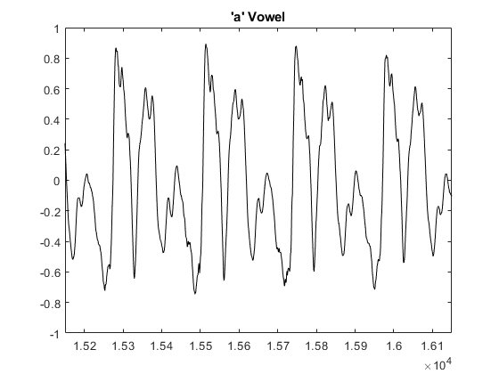

Sampling and Aliasing: Lab S-8: 2.3 — Decibel Spectrogram of Your Voice
Contents
2.3.1)
Here we load in a 7-second voice sample to find the "AAH" sound and zoom in on it.
load('48000_bicycle_built_for_two.mat', 'data'); fSamp = 48000; vv = data(370000:end, 1)'; % gets the left channel, second half of audio tSect = 0.025; lSect = round(tSect*fSamp); % must be an integer %soundsc(vv, fSamp); figure plotspecDB(vv + 1j*1e-12, fSamp, lSect, 80) axis([1.25, 2.275, 0, fSamp/16]) colorbar grid on title("'Half'")
After some testing, Tsect of 25ms gave the cleanest vowel lines. Multiplying this by the sampling frequency gives the Lsect, which is 1200.
T_sect = 0.025 s L_sect = 1200 samples

The 'a' vowel from the word "half" is annotated in the red box.
ans =
Image with properties:
CData: [1200×598 double]
CDataMapping: 'scaled'
Use GET to show all properties

2.3.2)
The short 'a' vowel has a fundamental frequency of about 200Hz (G3). This corresponds to a fundamental period of 5ms.
Fundamental Frequency = 200 Hz Fundamental Period = 0.005 s
2.3.3)
figure plot(vv(69800:105600), 'k-') axis([15150, 16150, -1, 1]) title("'a' Vowel")
By directly measuring the distance between the peaks in the waveform, we found an average difference of 233 samples, which is 4.85ms. This is very close to the 5ms found in 2.3.2: a difference of only 6Hz.
2.3.4)
By measuring the distances between peaks in the time domain plot, I was able to find a very accurate value for the fundamental period during that very small amount of time. By instead finding the fundamental frequency from the frequency domain plot, I could only find what seemed to be the middle of the darkest line, which may have made the measurement less accurate, however, the frequency domain gave a much better idea of what the average frequency over a large amount of time was.